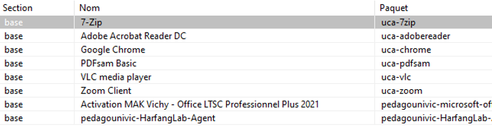

Chaque année pendant les vacances d'été et avant la rentrée scolaire, il est nécessaire de mettre à jour les postes informatiques du pôle et des bâtiments que nous gérons, ce qui représente près d'une quinzaine de salles informatiques.
Le déploiement de système d'exploitation s'effectue avec Windows MDT en lite touch, Windows Deployment Services (WDS) et Microsoft Deployment Toolkit (MDT) en mode Lite Touch sont
utilisés pour simplifier le déploiement des ordinateurs. Ce processus permet de sélectionner facilement la version de Windows (10 ou 11), de nommer la machine, et de choisir l'Unité
Organisationnelle (OU) dans Active Directory où l'ordinateur sera rangé.
Les OUs facilitent la gestion et la supervision des postes, notamment avec des outils comme Veyon, en permettant une organisation logique et hiérarchique des ressources.
En plus de l'installation de Windows, il est nécessaire de déployer des logiciels sur les postes informatiques. Pour cela, nous utilisons WAPT, un outil de déploiement de logiciels. Dans les masters des OS que nous déployons, un agent WAPT est integré, ce qui permet de déployer automatiquement les logiciels. étant en partenariat avec l'UCA, la plupart des logiciels proviennent de leur dépôt, ce qui facilite le déploiement. Cependant, un technicien du service informatique crée également ses propres paquets pour répondre à des besoins spécifiques.
